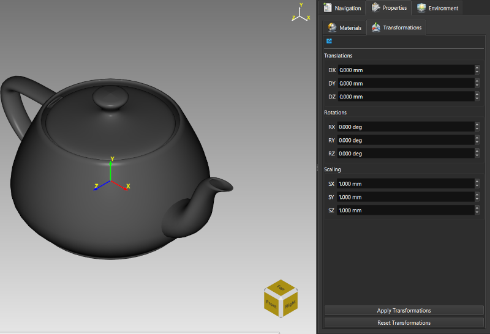
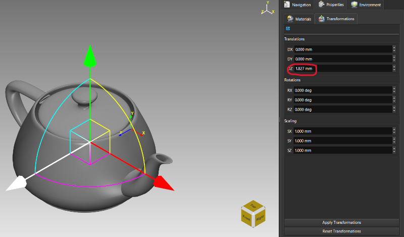
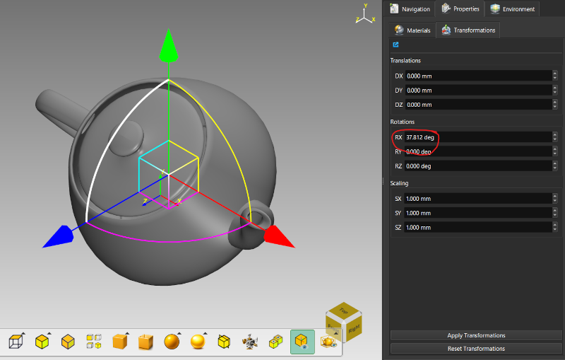
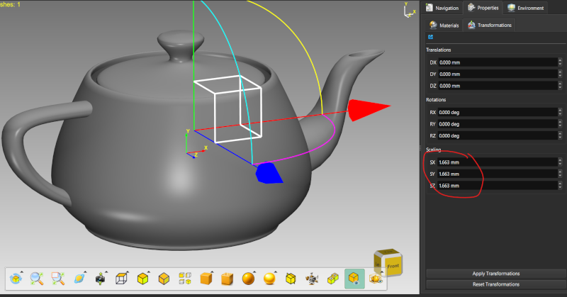
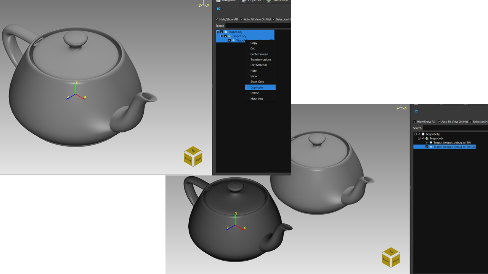

Lesson 8 of 18
Lesson 8: Manipulating Objects
Accessing Transformations
Select an object, then use the Transformations panel in the right panel to enter exact numeric values, or right-click the selection for the same option.

Prefer working visually instead of typing numbers? Lesson 17 covers the interactive on-screen Transform Gizmo, which edits the same underlying transform by dragging handles directly in the viewport.
Translation, Rotation, and Scaling
Translation
Move the selection along X, Y, or Z by entering DX, DY, DZ values.

Rotation
Enter RX, RY, RZ values (degrees) to rotate around each axis.

Scale
Enter SX, SY, SZ values per axis. Factors >1 enlarge; <1 shrink. Set all three to the same value for uniform scaling.

Apply / Reset
Click 'Apply Transformations' to commit the entered values, or 'Reset Transformations' to clear the fields back to zero/identity. Applying is fully undoable (Edit → Undo).
Duplicating
Create copies via Right-Click → Duplicate. Use transformations to separate the copy from the original.
